这篇论文讨论的是一个很具体但长期被推荐系统忽略的问题：矩阵分解这类协同过滤模型能把用户和商品压进 dense embedding，却很难说明某个 embedding 维度到底对应什么语义。论文来自 Tel Aviv University，作者为 Yagel Alfasi、Eden Rzezak 和 Eadan Schechter。论文入口为 arXiv:2606.29341，PDF 内嵌链接核验到项目代码仓库 Project GitHub Repository。本文把 mechanistic interpretability 里的 sparse autoencoder 和 monosemantic feature 思路移植到 Amazon Fashion 推荐 embedding 上，重点不是提出一个更强的线上推荐模型，而是问：推荐系统内部是否也藏着可解释、可干预的稀疏语义轴。
矩阵分解这类潜因子推荐模型虽然能在大规模交互数据上学习用户和商品 embedding，但这些维度通常没有清晰语义，导致系统很难解释为什么推荐某个商品，也很难有原则地定位偏置、调试失败案例或直接干预推荐行为。
1. 背景和问题
推荐系统里最经典的一条路线是 latent factor model，尤其是 matrix factorization。它把用户和商品分别表示成低维向量，再用向量之间的相似性或内积估计用户会不会和商品发生交互。这条路线的优点很明确：在极稀疏交互矩阵上可扩展，工程实现简单，训练出来的向量能吸收大量协同信号；缺点也同样顽固：向量维度本身通常不对应一个人能读懂的概念。一个商品 embedding 的第 7 维变大，可能和女装有关，也可能和热销、季节、价格带、用户群或数据采样偏差有关；如果系统推荐错了，工程师往往只能回到样本、特征、召回池和排序日志层面排查，很难直接说“这个隐变量在推高某类商品”。
论文选择 Amazon Fashion 作为实验场景很合理。Fashion 商品天然带有层级语义：服装、女装、连衣裙、夏季连衣裙、花纹夏季连衣裙，这些概念之间既有上下位关系，又会和性别、场景、材质、品牌等属性交叉。与此同时，真实电商交互又高度稀疏、长尾明显，用户只看过少数商品，热门商品吸收大量曝光和反馈，冷门商品只留下很弱的协同信号。也就是说，这个数据集既有语义结构，也有很强的统计噪声；如果一种解释方法能在这里找到稳定语义轴，它就至少说明 MF embedding 不是完全黑箱的随机压缩。
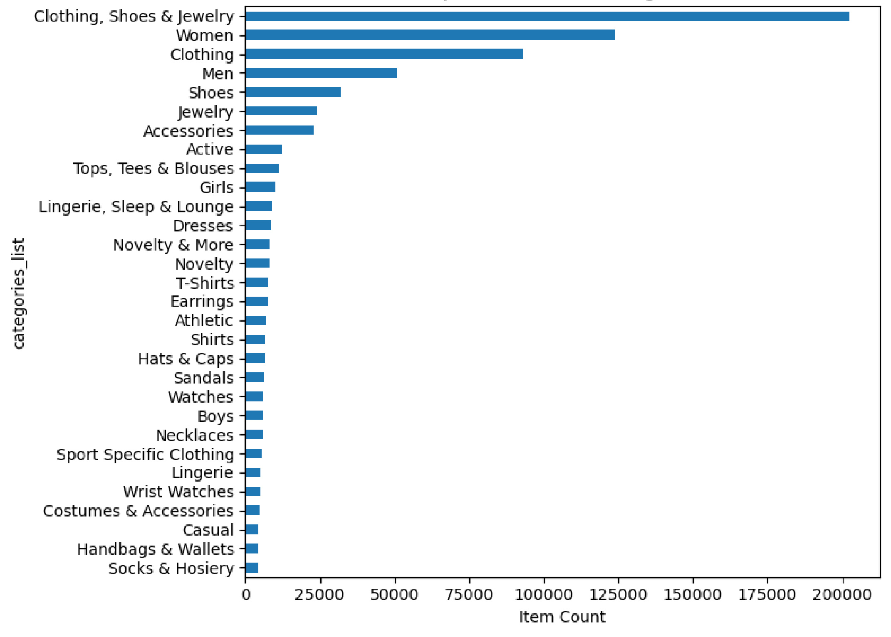
Figure 1 展示的是元数据里出现频率最高的 30 个 fashion 子类别。最靠前的是 “Clothing, Shoes & Jewelry”、Women、Clothing、Men、Shoes 等大类，说明数据本身有非常强的层级分类痕迹，也有明显的性别相关类别。这个图在笔记里放在背景部分，是因为它先说明了后面“gender-associated latent neurons”不是作者凭空找出来的标签：商品目录里确实存在女装、男装、鞋、饰品等高频语义块。需要注意的是，类别频次高不等于推荐模型一定把这些类别学成可解释神经元；它只是提供了一个合理的外部语义参照，让后续 MSAE 发现的 latent axis 可以和真实元数据对齐。
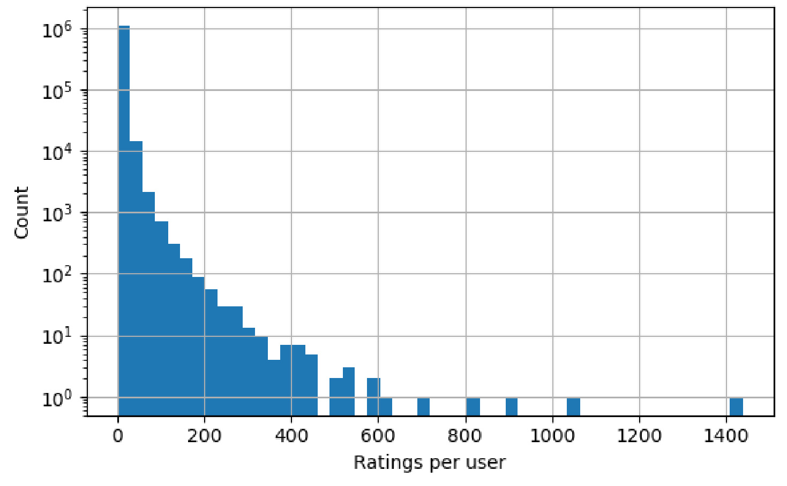
Figure 2 把每个用户的评分/交互数量画成 log scale 分布，长尾非常明显。大部分用户只有很少交互，少数用户贡献大量行为。这对 monosemanticity 的挑战在于，MF 不是在干净语义标签上训练，而是在极不均衡的交互图上学习；用户 embedding 会混合兴趣、活跃度、流行趋势和采样偏差。后面如果一个神经元看起来和“女性服饰”相关，仍然要追问：它是真的捕捉了商品语义，还是只捕捉了高活跃用户群体、热门品类或曝光机制？因此本文的实验不能只做 LLM 标签，还必须做推荐结果干预和稳定性分析。这个图也解释了为什么作者没有把 MF 本身当成可解释模型：当每个用户的观测行为如此不均匀时，单个 latent dimension 很容易承担多个统计因素，只有额外的稀疏分解和因果扰动，才可能把其中一部分概念拆出来。
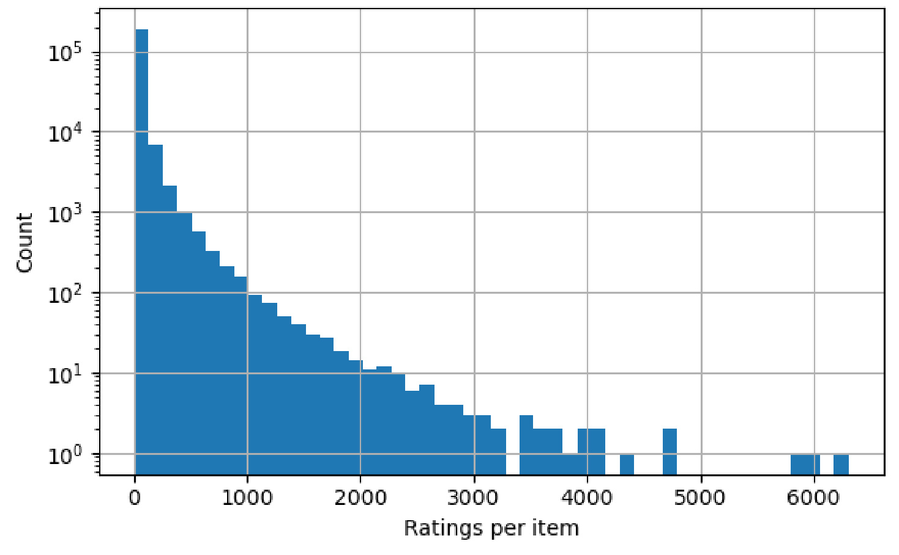
Figure 3 是 item side 的对应分布，说明商品也高度长尾。许多商品只有少量交互，少数商品拥有远高于平均水平的反馈。对推荐解释来说，这一点尤其重要：如果稀疏 autoencoder 学出的 neuron 只是“热门商品 neuron”，它可能在 cosine similarity 或 Top-K 推荐里表现得很稳定，却不一定具备人类语义。论文后面引入 Monosemanticity Score 时，用的是 MF item embedding 空间里的 activation-weighted pairwise cosine similarity，这个度量会受到流行度和 embedding 几何结构影响；所以本文的核心问题不是“能否给每个 neuron 起名字”，而是要把分数、标签、推荐干预和类别变化放在一起看。
这篇论文的问题意识可以拆成三层。第一层是解释性：MF embedding 维度不透明，无法像显式标签或规则特征那样被审计。第二层是机制性：如果 dense representation 里有 sparse semantic structure，能不能用 SAE 把它恢复出来，而不是只做 post-hoc attribution。第三层是可控性：找到一个“女性服饰”相关 latent axis 之后，改变这个 axis 是否真的会改变推荐列表，还是只是在分析图上看起来有语义。作者用 Matryoshka Sparse Autoencoder 的原因也来自这里：普通 SAE 随着字典变大容易 feature splitting、feature absorption、feature composition，解释性反而下降；MSAE 通过嵌套前缀目标强迫早期 latent 捕捉粗粒度因素，后期 latent 做细化，从结构上更适合商品类目这种层级语义。
2. 方法
2.1 先训练一个只负责推荐的 MF 表示空间
论文的第一步不是直接训练 autoencoder，而是先在 Amazon Fashion 上训练一个矩阵分解推荐器。作者把原始 1-5 分评分视为 implicit feedback，只要有观测评分就当作正交互；低活跃用户和低频商品被剪枝后，保留 1,089,923 个用户和 182,207 个商品。为了计算成本，MF 使用 40% 用户训练，embedding 维度设为 20。这里最关键的边界是：MF 训练不使用商品类别标签来监督解释，后面的语义分析只能从交互训练出的 item embedding 中恢复结构。
论文用自然语言描述 MF 的打分方式，可以写成：
符号解释：$p_u$ 表示用户 $u$ 的 embedding，$q_i$ 表示商品 $i$ 的 embedding，$\hat{s}_{ui}$ 是模型预测的用户-商品相关性分数。这个公式本身非常简单，但它正是问题的来源：推荐行为由两个 dense vector 的内积决定，而向量每一维没有显式语义。训练时，模型用 observed interaction 作为正样本，再对未观测 user-item pair 做 negative sampling，并用 sigmoid 后的 binary cross-entropy 以及 user/item embedding 的 L2 正则学习参数。推理时，MF 只需要计算用户向量和候选商品向量的内积；解释阶段则固定训练好的 item embedding，不再更新 MF。
2.2 用嵌套前缀约束把 dense item embedding 拆成层级稀疏特征
第二步是把固定的 item embedding 输入 Matryoshka Sparse Autoencoder。普通 SAE 会把输入 $x$ 编码为一个稀疏 latent vector：
符号解释：$x$ 是 MF 学到的商品 embedding，$h_{\mathrm{enc}}$ 是 autoencoder 的 encoder，$z$ 是稀疏 latent 表示，$k$ 是 latent dictionary 大小。本文里 $k=50$。如果只是普通 SAE，训练目标通常只要求完整 $z$ 能重构输入；字典变大后，高层概念可能被后来的更细粒度特征吸收或切碎。MSAE 的不同点在于，它规定一组有序前缀：
符号解释：$\mathcal{M}$ 是前缀大小集合，$m_l$ 表示第 $l$ 个可用 latent 前缀容量，$k$ 是完整 latent 字典大小。本文实际使用的前缀是 $\{5,10,15,20,25,30,35,40,45,50\}$。每个前缀 $z^{(m)}$ 都要单独重构原始 embedding：
符号解释：$z^{(m)}$ 是前 $m$ 个 latent activation，$W_{\mathrm{dec}}^{0:m}$ 是 decoder 中对应前缀的权重，$b$ 是偏置，$\hat{x}^{(m)}$ 是只使用前 $m$ 个 latent 时的重构结果。这个设计让早期 latent 不能把责任完全推给后面的 specialist neuron，因为每个前缀都要独立完成一部分重构。
核心损失写成：
符号解释：$\alpha_m$ 控制每个 prefix reconstruction 的权重，$\lVert x-\hat{x}^{(m)}\rVert_2^2$ 是该前缀的重构误差，$\lambda$ 是稀疏惩罚系数，$\lVert z\rVert_1$ 鼓励每个商品只激活少量 latent neuron。论文正文还说明实际训练组合了 weighted MSE、L1 sparsity、KL target sparsity 和 inner product preservation loss，最后一项用来让重构后的 item embedding 尽量保持原 MF 的 user-item relevance score。换句话说，MSAE 在这里不是替代推荐器，而是一个 post-hoc interpretability lens：它必须解释 item embedding，同时尽量不破坏原推荐排序。
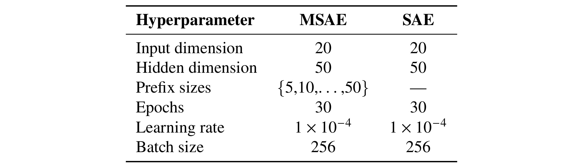
Table 1 给出最后使用的训练配置。两个模型的输入维度都是 20，hidden dimension 都是 50，训练 30 个 epoch，learning rate 为 $1\times10^{-4}$，batch size 为 256；差异在于 MSAE 有 $\{5,10,\ldots,50\}$ 的 prefix sizes，而普通 SAE 没有前缀约束。这个表很重要，因为它排除了一个简单反驳：MSAE 不是因为更大容量、更长训练或更激进的学习率才产生更好解释，而是在相同 hidden dimension 和主要训练设置下，通过嵌套目标改变 latent 组织方式。需要保守看的是，hidden dimension 只有 50，仍是小规模探索；如果扩到几千或几万 neuron，feature splitting 和训练成本是否还能被 Matryoshka 结构控制，论文没有证明。
2.3 把视觉模型里的 MS 分数改写成推荐 embedding 的几何一致性
第三步是评价每个 latent neuron 是否“单义”。论文借鉴 Pach 等人在视觉-语言模型里用的 Monosemanticity Score，但把“图像相似度”替换成“商品在 MF embedding 空间中的 cosine similarity”。具体做法是：对每个 neuron 找到 activation 高的商品集合，再计算这些商品之间的 activation-weighted average pairwise similarity。如果一个 neuron 激活的商品在 embedding 空间里彼此接近，它的 MS 分数就高；如果激活商品来自很分散的区域，分数就低。
这里要注意一个细节：MS 分数衡量的是 embedding geometry coherence，不等于人类标签 coherence。一个 neuron 可能被 LLM 标成“女装”，但其激活商品横跨鞋、内衣、连衣裙和配饰，在 MF 空间里相距较远，于是 MS 分数低；反过来，一个高 MS neuron 也可能只是捕捉了热门商品、相似曝光机制或价格带。论文后面提到 N3 就是这种分数和标签不完全一致的例子：它得到 women apparel 相关标签，但 MS 排名很低。这也是本文最值得借鉴的地方之一：不要把单个解释指标神化，应该同时看几何分数、语义标签和干预效果。
2.4 用 LLM 标注和神经元缩放检验语义轴是否真的可控
第四步是定性标注和因果干预。作者对每个 latent neuron 取 top-activating items，把商品标题和 category path 给 Claude Opus 4.5，让模型生成 broad label、refined label、description、confidence 和 evidence。这个过程会引入 LLM 标签偏差，因此它不能单独作为证据；论文真正把它推进了一步：从标签里选出和 women-oriented product categories 稳定相关的 neuron set：
符号解释：$\mathcal{N}_{\mathrm{gender}}$ 表示被标注和人工检查后选出的 6 个 gender-associated latent neurons，占 50 个 latent neuron 的 12%。这些 neuron 的 top-activating items 反复出现 women's apparel、dresses、lingerie、footwear 和 accessories 等模式。随后作者在推理时对这些 neuron 做缩放：
符号解释：$z_i$ 是原始 latent activation，$z'_i$ 是干预后的 activation，$\alpha$ 是缩放系数。论文测试了 amplify 条件 $\alpha=1.5$ 和 suppress 条件 $\alpha=0.5$，并在 50 个随机用户上生成 Top-50 推荐列表。这一设计把解释从“这个 neuron 看起来像某个概念”推进到“改变这个概念会不会按预期改变推荐列表”。它仍不是线上 A/B，也不是公平性修复方案，但比只贴 neuron label 更接近机制验证。
3. 实验结果
3.1 MSAE 没有明显破坏原 MF 推荐排序
论文首先比较普通 SAE 和 MSAE 在重构 item embedding 后对推荐排序的影响。评估方式是固定原始 MF 的 user embedding，用 SAE/MSAE 重构后的 item embedding 计算推荐分数。这个设置衡量的不是“新推荐模型比旧模型更好”，而是“解释器重构后的表示是否仍保留原 MF 的排序行为”。这一区分很重要，因为如果 MSAE 为了让 neuron 更可解释而严重改变推荐列表，后面的干预就很难说是在解释原模型。
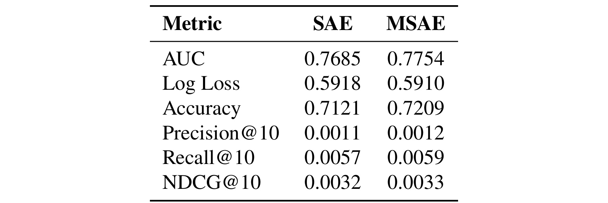
Table 2 显示 MSAE 在 AUC、Log Loss、Accuracy、Precision@10、Recall@10、NDCG@10 上都略好于 SAE：AUC 为 0.7754 对 0.7685，Log Loss 为 0.5910 对 0.5918，Accuracy 为 0.7209 对 0.7121。Precision@10、Recall@10 和 NDCG@10 的绝对值都非常小，论文解释这是 Amazon Fashion 极稀疏和每个用户 held-out positives 少造成的。因此这个表不能被解读为“MSAE 显著提升推荐效果”，更稳妥的读法是：在同等 hidden dimension 下，MSAE 至少没有比 SAE 更差，并且在保留排序行为方面没有明显付出代价。
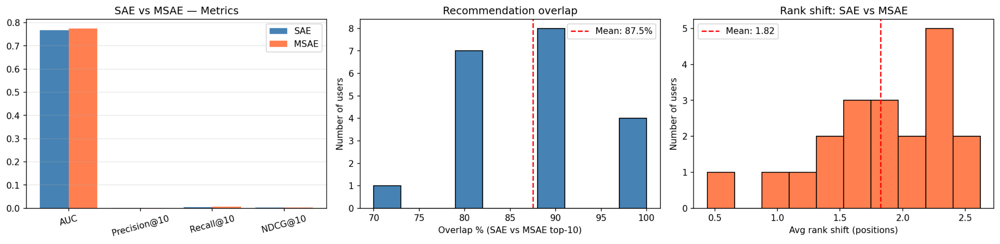
Figure 4 补充了 list-level 证据。左图把 AUC、Precision@10、Recall@10、NDCG@10 放在一起，能看出主差异仍集中在 AUC；中图显示 20 个 sampled users 的 top-10 overlap 均值为 87.5%；右图显示 shared items 的平均 rank shift 为 1.82。这个图的意义不是证明 MSAE 更会推荐，而是证明它作为解释层时没有大幅重排原 MF 的候选。对工程落地来说，这是一条必要但不充分的线：解释器应尽量忠实于被解释模型，但还需要更大用户样本、更高 K、更真实的线上候选池来判断稳定性。尤其是中间和右侧两个分布图，比单个均值更能暴露风险：如果只有少数用户 overlap 极低或 rank shift 极高，后续上线前就必须单独排查这些用户画像和商品类目。
3.2 Monosemanticity 分数说明 latent dictionary 内部存在粗细分化
接下来作者对 50 个 MSAE neuron 计算 MS 分数，使用 5,000 个 item 的 subsample。分数范围约为 0.075 到 0.201，最高的几个 neuron 是 N41、N44、N43、N40、N36，最低的是 N3、N1、N0。这个顺序和 Matryoshka 的直觉吻合：早期 prefix neuron 要在小容量下重构整体 embedding，承担更粗的方差；后期 neuron 可以补充更专门的细粒度概念，因此更容易获得高 MS 分数。
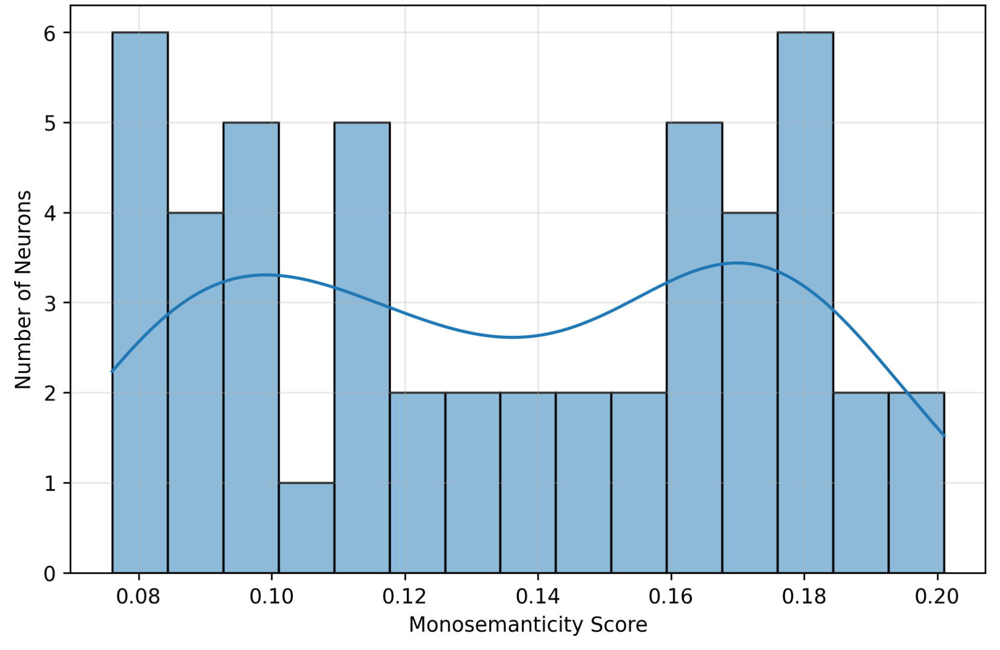
Figure 5 的分布有明显的双峰形态，一簇在 0.08-0.11 附近，另一簇在 0.16-0.19 附近。这个现象支持“latent dictionary 里有 broad neuron 和 specialized neuron 两类群体”的说法，但也要避免过度解释。MS 分数是 embedding 空间内的几何一致性，不直接等价于可读标签质量；如果原 MF 空间本身把某些热门品类压得更近，高 MS 也可能反映统计相似而不只是语义单义。论文的贡献在于把这个分布和后续 LLM label、干预实验连接起来，而不是把一张分布图当作最终答案。换成推荐工程语言，这张图回答的是“哪些 latent neuron 更像稳定 item cluster”，还没有回答“这些 cluster 是否是业务可理解概念”；后者必须结合 top-activating items 和后面的推荐列表变化才能判断。
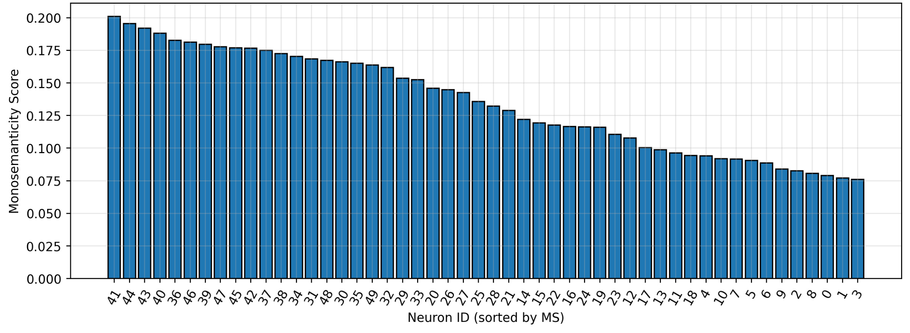
Figure 6 把每个 neuron 按 MS 从高到低排列，可以看到高分 neuron 多来自较高 index 的 latent 区间。这里和 MSAE 前缀训练目标形成了呼应：如果早期 neuron 必须服务于多个 prefix reconstruction，它们倾向于编码宽泛因素；后期 neuron 在已有粗重构基础上细化，才更容易对应鞋类、女装、饰品等较窄概念。值得注意的是，论文后面选入 gender axis 的 neuron 并不全是最高 MS，N3 甚至低分，这说明作者不是机械用 MS Top-K 选 neuron，而是结合 LLM 标签和商品类别检查做了语义选择。这个处理比只取高分 neuron 更稳健，因为推荐 embedding 里的语义和几何相似度并不总是一致，低分但标签稳定的 neuron 仍可能对应一个业务可读的宽概念。
3.3 gender-associated neuron 干预带来方向性变化，但不是大幅重写列表
论文最有意思的实验是 gender-associated neurons 的缩放。作者根据 LLM 标注和 top-activating items，选出 N3、N32、N39、N41、N45、N48 六个 neuron，然后对 50 个随机用户分别生成 baseline、amplify、suppress 三种 Top-50 推荐。核心问题是：如果这些 neuron 真编码 women-oriented fashion preference，那么放大它们应该提高 women-associated items，占比；压低它们应该减少这类商品，同时推荐列表不能完全崩掉。
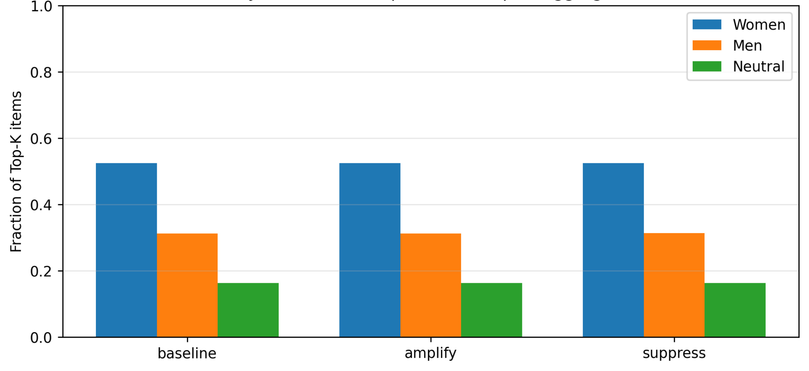
Figure 7 显示三种条件下 women、men、neutral 商品在 Top-K 列表中的比例。整体上 women-associated products 本来就占多数，大约 52%-54%，men-associated products 约 30%-32%，neutral 约 16%-17%。放大 gender neurons 后 women share 有轻微增加，抑制后则轻微下降。这个变化幅度并不大，但方向和预期一致。更重要的是，图中没有出现某一类突然暴涨或推荐列表完全转向的现象，这说明这组 neuron 更像是调整排序倾向的 steering knob，而不是控制全部推荐结果的主开关。对解释性来说，小幅变化反而有价值：如果一个局部 latent axis 的缩放就能完全改写分布，可能说明重构器不稳定；现在的结果更接近“找到一个能被审计的偏好方向”。
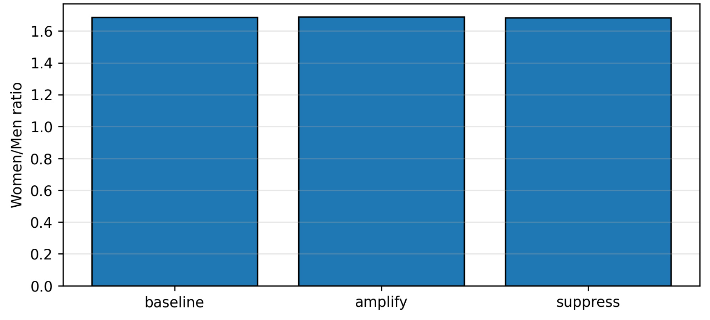
Figure 8 把 women-to-men ratio 单独拿出来看，三种条件几乎保持在相近水平。这个图很适合用来约束结论：论文没有证明“通过几个 neuron 可以任意改写性别分布”，而是证明在给定 MF+MSAE 表示里，有一组可解释 neuron 对组成有小幅、方向性影响。对推荐系统治理来说，这个区别很关键。一个好的解释轴最好能被审计和微调，但如果它一调就摧毁排序稳定性，反而说明模型内部语义和行为耦合过强，难以安全使用。这里也能看出总比例指标的局限：ratio 几乎不变，并不代表没有业务影响，因为具体商品类目和排序位置仍可能发生变化，所以后面还要继续看 overlap、rank shift 和 category token。
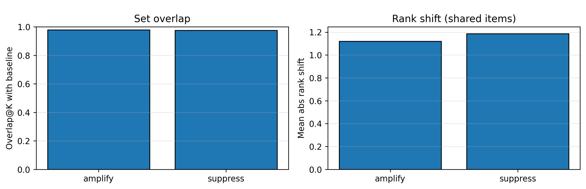
Figure 9 进一步说明推荐稳定性。amplify 和 suppress 条件下，和 baseline 的 Overlap@50 都超过 0.96，说明大部分推荐商品仍然相同；shared items 的平均绝对 rank shift 大约在 1 个位置左右，说明干预主要改变相对排序，而不是替换整个集合。这是本文最能支撑“principled intervention”的证据之一：如果列表大幅换血，就很难判断变化来自 gender neuron 还是来自重构噪声；现在高重合度让干预效果更像局部 steering。它也暗示 MSAE 的解释空间和原 MF 排序空间仍然对齐，否则缩放 latent neuron 会造成大量候选消失或排名剧烈震荡。对生产系统来说，这类指标应当和点击率、转化率、覆盖率一起看，因为“列表稳定但位置微调”更接近可控干预的安全边界。
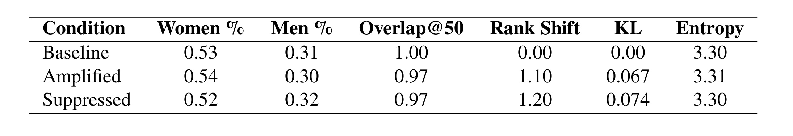
Table 3 把 composition、Overlap@50、Rank Shift、KL 和 Entropy 汇总在一起。Baseline 的 women/men 比例是 0.53/0.31，amplified 是 0.54/0.30，suppressed 是 0.52/0.32；Overlap@50 在两种干预下都是 0.97，Rank Shift 分别为 1.10 和 1.20；KL 为 0.067 和 0.074，Entropy 约 3.30-3.31。这个表使结论更清楚：干预有方向，但强度有限；类别分布有中等变化，但总体多样性没有明显下降。它同时也暴露局限：样本只有 50 个用户，且没有置信区间或显著性检验，不能直接推到线上公平调控。若在真实系统中复现，至少还要分用户活跃度、历史偏好强弱和商品曝光量分桶，否则平均数可能掩盖少数用户上的强扰动。
3.4 类别分布说明 neuron 不是抽象 gender 标签，而是商品类目组合
如果 gender-associated neurons 只是捕捉到一个抽象 gender label，那么改变它们可能只改变 women/men 计数；但论文进一步看 category token changes，试图判断它们具体影响哪些商品类目。这一步比总比例更有解释价值，因为推荐系统真正展示给用户的是具体商品，而不是抽象标签。
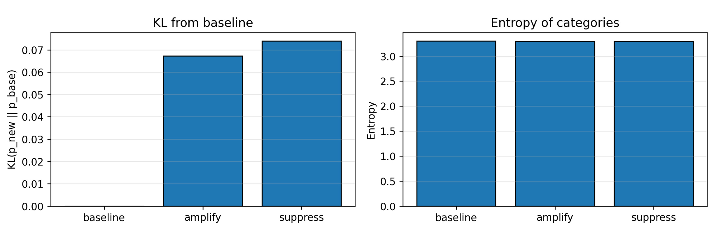
Figure 10 左图显示相对 baseline 的 KL divergence，amplify 和 suppress 都在 0.07 左右，说明类别分布确实发生了中等程度移动；右图显示 entropy 基本稳定，表示这种移动不是把推荐集中到少数类别。这个结果对工程含义比较友好：如果一个干预轴在改变目标类别时还保持类别多样性，它更可能成为可审计工具；如果 KL 高且 entropy 大幅下降，就可能是把列表推向狭窄品类，带来体验和公平风险。也就是说，这里观察到的是“分布方向被拨动，但整体覆盖没有塌缩”，这比只报告 women share 更接近推荐系统需要的多目标评估。它还提醒读者，干预评价不能只看目标属性是否变动，也要看非目标品类有没有被意外牺牲。
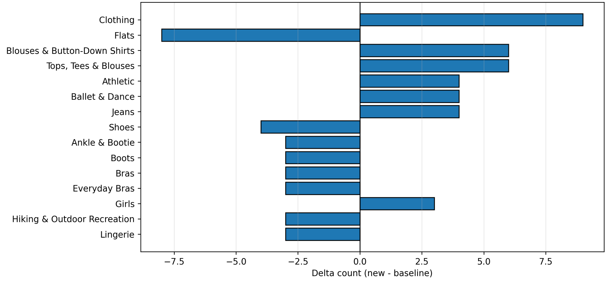
Figure 11 给出更细的类别变化。抑制 gender-associated neurons 后，Flats、Shoes、Ankle & Bootie、Boots、Bras、Everyday Bras、Lingerie 等强 women-oriented 或 footwear/lingerie 相关类别减少，而 Clothing、Blouses & Button-Down Shirts、Tops, Tees & Blouses、Athletic、Ballet & Dance、Jeans 等更中性或泛服装类别增加。这个图让“gender axis”变得更具体：它并不是一个干净、抽象、只有性别含义的变量，而是一组和女装、鞋履、内衣、配饰等商品层级纠缠的偏好方向。对公平审计来说，这一点非常重要，因为干预一个看似 gender 的 neuron 可能同时改变款式、场景和品类覆盖。
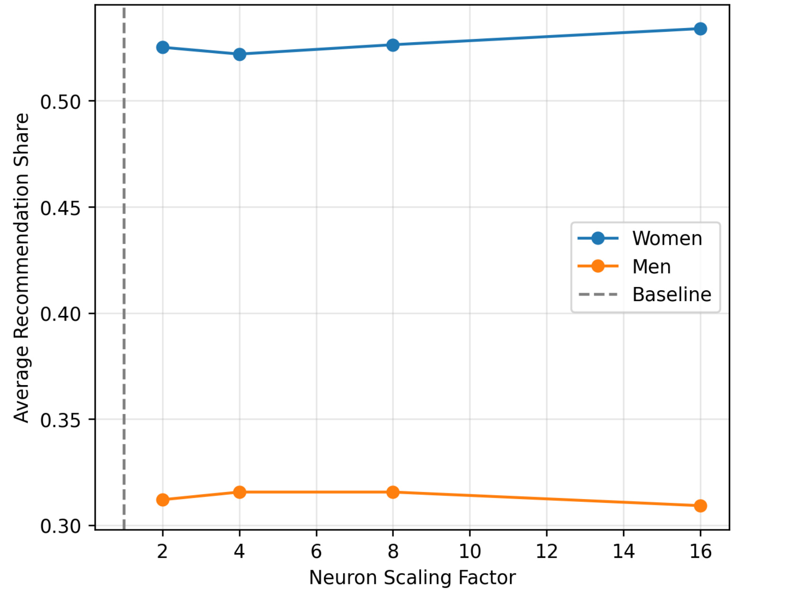
Figure 12 把缩放因子扩展到 2、4、8、16，可以看到 women recommendation share 随缩放因子整体缓慢上升，men share 略有下降。这个曲线比单点 amplify/suppress 更有说服力，因为它说明所选 neurons 不是只在某个偶然阈值上产生一次性变化，而是在更强缩放下保持方向性响应。不过这个曲线也提示风险：响应不是剧烈线性增长，说明该轴只是推荐行为的一部分；如果工程上希望用它做强控制，可能需要结合其他 latent axes、显式约束或 reranking policy，而不能把这 6 个 neuron 当成完整的 fairness/control interface。曲线的平缓性也让它更适合做诊断工具：通过观察输出随缩放变化的方向，可以确认某组 latent features 是否真的参与了相关类目的排序决策。
3.5 结果应如何保守解读
综合这些实验，本文可以支持三个较稳的结论。第一，Amazon Fashion 的 MF item embedding 中确实能通过 MSAE 恢复出一些层级稀疏结构，且高 index neuron 更容易表现出几何上更一致的 item clusters。第二，MSAE 相比普通 SAE 没有明显破坏原推荐排序，至少在作者的离线设置下，AUC、Top-10 overlap 和 rank shift 都支持“解释器较忠实”。第三，基于 LLM 标注选出的 gender-associated neurons 在缩放后能产生方向一致、幅度有限、列表稳定的推荐变化。
但更强的说法还不能成立。论文没有证明这些 neuron 是唯一或完整的 gender 因素，也没有证明对其他数据集、其他推荐模型、线上流量或更大 latent dictionary 依然成立。MS 分数使用 MF embedding cosine similarity，本身会继承 MF 空间里的偏差；LLM 标注使用商品标题和 category path，也会把数据集既有标签体系和 LLM 的先验带进解释。因此，这篇论文更像是一个可复现的 interpretability probe，而不是一个可直接上线的公平干预方案。
4. 总结
4.1 我的判断
这篇论文值得看，是因为它把 monosemanticity 从 LLM/vision 的 activation 分析带到了推荐系统里，而且没有停留在“给 neuron 起名字”。它先训练 MF，再用 MSAE 做 post-hoc sparse decomposition，然后用 MS 分数、LLM 标签和 causal intervention 三种证据相互校验。对推荐系统工程来说，最有价值的不是 MSAE 这个模型名字，而是这种分析范式：先保留原推荐器，再建立一个尽量忠实的解释层，最后用小范围干预确认解释是否真的影响推荐行为。
它对线上系统的迁移启发主要有三点。第一，embedding 解释不一定只能靠特征归因，也可以把 dense embedding 分解为 sparse latent concepts，然后对 concept 做审计。第二，可解释轴必须和推荐稳定性一起看；如果干预造成低 overlap 或大 rank shift，那它更像扰动而不是可控解释。第三，语义轴往往不是纯概念，而是类目、流行度、用户群和商品属性的混合，因此需要 category shift、entropy、覆盖率和用户体验指标一起评估。
4.2 局限和后续跟进
局限至少有四个。第一，实验只在 Amazon Fashion 单一领域完成，而且该领域天然有强 gender/category 结构，结果不一定迁移到电影、音乐、新闻、短视频或广告。第二，MSAE latent dimension 只有 50，能够发现粗粒度轴，但不足以证明大字典下仍能避免 feature splitting/absorption。第三，用户样本和干预评估偏小，50 个用户的 Top-50 离线实验不能替代真实线上多目标排序。第四，LLM semantic labeling 可能引入模型先验，尤其是把商品标题里的性别词、服饰词过度归纳成稳定 latent concepts。
后续我会优先关注三类工作。第一，把这条 pipeline 放到更强的推荐模型上，例如 two-tower、NCF、sequence recommender 或 ranking model 的中间层，看 monosemantic axis 是否仍可恢复。第二，引入 human annotation 或多模型一致性检查，验证 LLM neuron labels 是否可靠，尤其要区分 gender、category、popularity 和 price/style 等纠缠因素。第三，在推荐控制上比较 MSAE intervention、显式 reranking constraint 和 fairness-aware loss 的差别，判断 post-hoc latent steering 更适合调试、解释、审核，还是能进入实际策略干预。
总的来说，MonoRec 的贡献不是把推荐系统“解释完了”，而是给了一个可操作的入口：如果协同过滤 embedding 不是完全不可读的，那么我们可以用层级稀疏分解把其中一部分语义结构拉出来，再用干预实验验证这些结构是否和推荐行为有因果关系。这个方向对推荐系统的长期价值在于，它把“模型为什么这么推荐”从日志分析和个案解释，推进到 latent representation 层面的结构化审计。